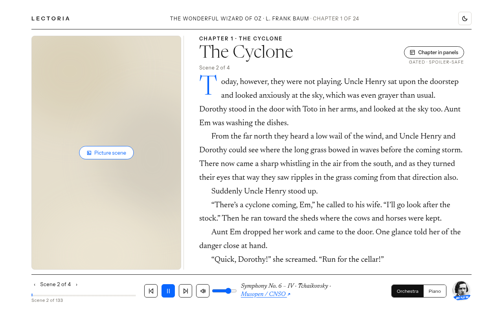
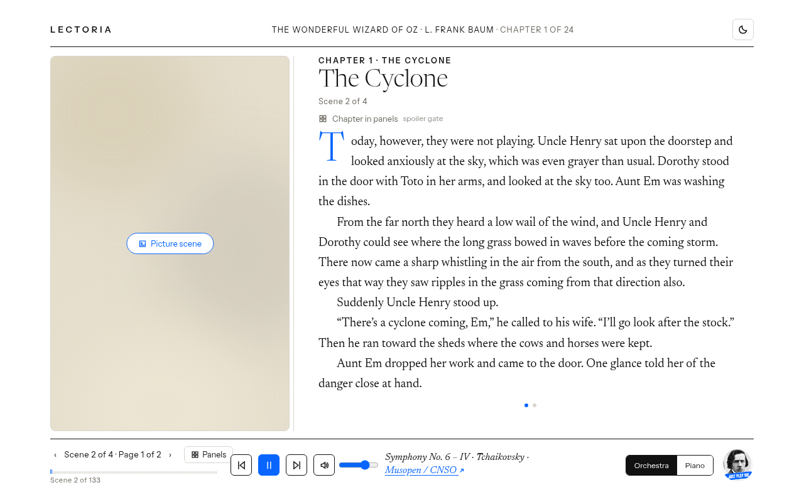
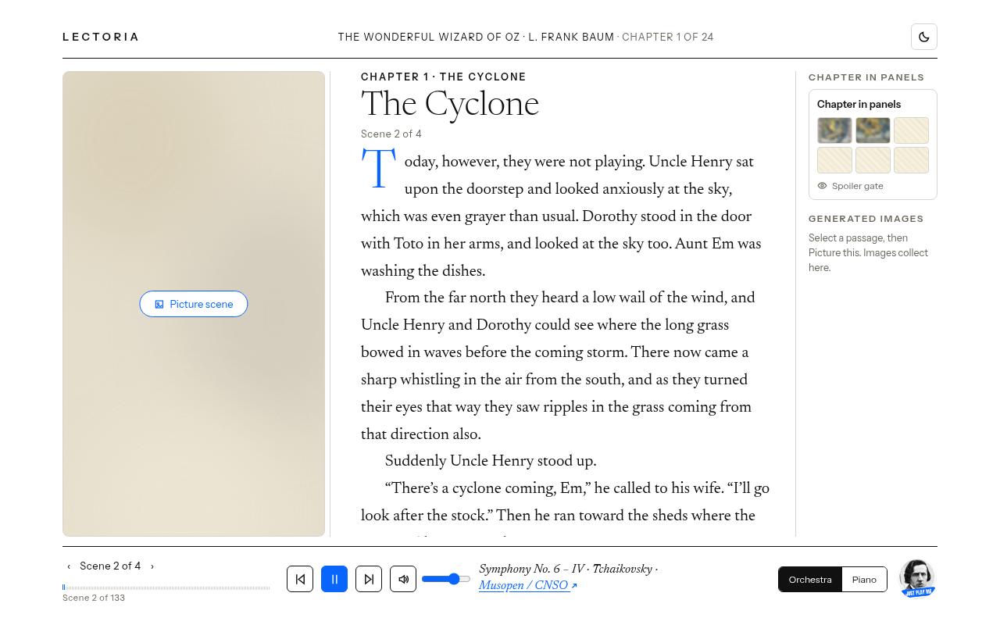

01Folio carousel
Does a small carousel keep images close without pulling focus from the text?
- Generated images live in the left image column with ‹ › controls and a 2 / 3 counter.
- Chapter in panels sits as a pill button by the chapter title, medium prominence.
- Text scrolls as one continuous scene.
-

Default

02Folio pages
Do short pages make a long scene easier to finish?
- Each scene splits into pages of at most 250 words with a slide transition and arrow keys, no scrolling.
- A collapsed Generated images strip sits at the top of the scene.
- Chapter in panels pairs an opener card at the chapter start with a Panels button in the music bar, high prominence.
-

Default

03Folio margin
Does a quiet margin keep images visible without competing with the text?
- A third, quiet right margin holds the generated images list.
- Chapter in panels sits as a small tile at the top of the margin, low prominence but always visible.
- Text scrolls as one continuous scene.
-

Default